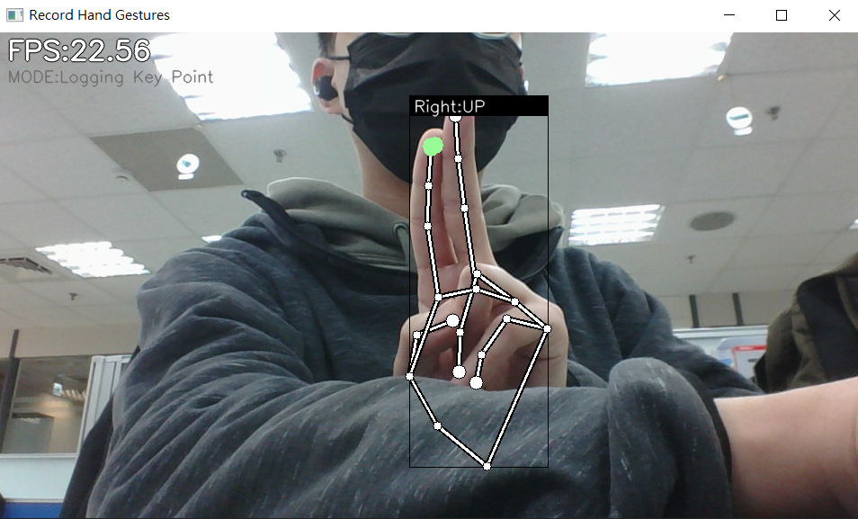
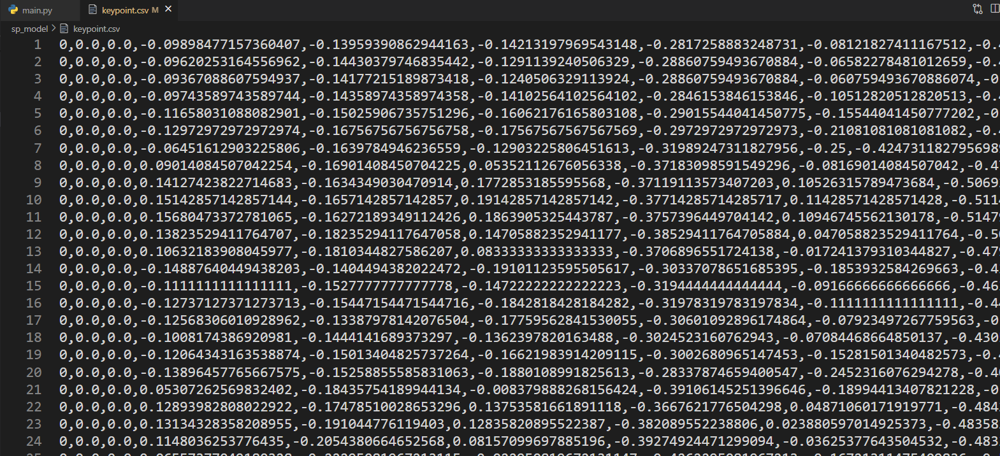
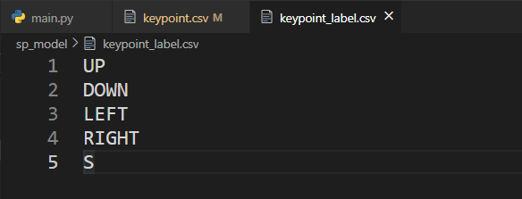
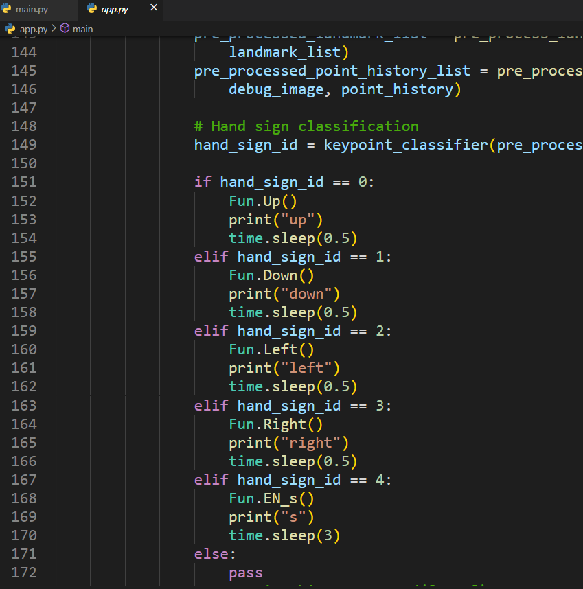

[Mediapipe] 利用Mediapipe手部辨識，不用滑鼠鍵盤也能快轉影片、調整音量!
前言
Mediapipe是什麼?
可以從Mediapipe官網中看到他是Google公司的開源專案，在Mediapipe的GitHub介紹寫到
Cross-platform, customizable ML solutions for live and streaming media.
並支援 Android , iOS , C++ , Python , JS 等平台，不過並不是所有平台都可以使用每一種演算法。
目前官網所提供的演算法有 Face Detection,Face Mesh,Iris,Hands Pose,Holistic,Hair Segmentation,Object Detection,Box Tracking,Instant Motion Tracking,Objectron,KNIFT
Hand
而這次使用Hands這個演算法，所以其他就不贅述。至於演算法詳細介紹可以點進連結了解，這邊只做基本說明。
手部辨識的演算法主要是透過手掌偵測手部位子，再透過21個定位點完成定位。
而這次專案主要是透過21個定位點紀錄位置後，定義手勢名稱進行指令的分配，下圖是官網說明。

正文
首先這個專案是從Kazuhito00這位作者的專案進行改寫而成的，不過專案內容都是日文，所以後來是看這篇的介紹才比較了解!
原始專案使用Mediapipe進行手部辨識後，記錄手部的21個座標，再透過Tensorflow建置模型，最後利用OpenCV進行手勢的辨識，其中作者提供兩種模型的訓練，分別為靜態手勢及動態手勢。
至於我改寫什麼部分?
使用PyQt5將主要功能GUI化,只要開啟main.py就能完成大部份的事(參考下圖)，並將訓練模式及偵測模式分開，因為我發現再同一個模式下執行兩件事情偵數掉得很嚴重，要記錄手勢會很不順，並且透過GUI介面直接跑py檔，不用去翻檔案。
為何我說是完成大部分的事呢?
因為幫手勢建好模型、上好標籤後，指派什麼手勢做什麼事情就需要大家發揮創意動手更改程式碼，來達成你想要遙控的的目的了!
在這邊我目前想到的是用手勢控制影片的播放，接下來會結合pyautogui套件輸入按鍵，像是鍵盤輸入 “->” 影片就會快轉，看Netflix時輸入 “s” 就會跳過前導，這樣就可以一邊吃東西然後不怕用髒滑鼠鍵盤來控制影片播放了!
專案連結
* APP - 開啟偵測模式
* Build - 開啟訓練模式
* Label - 開啟CSV檔幫手勢命名
* Training - 將記錄好的座標透過Tensorflow建置模型
程式使用說明
最重要的環境建置!將專案clone下來後建立虛擬環境(看個人習慣)
git clone https://github.com/AnselCh/HandGestures_GUI.git
Python 3.10.8
pip install -r requirements.txt
- 終端機執行python main.py就會進到上圖的GUI介面，接著就要開始訓練自己的手勢模型，不然原本預設的模型會是我的。
- 點擊”Build”後會開啟訓練模式，首先會跳出設定畫面
* Max Hands - 設定app.py裡的max_num_hands的參數
依需求填入要同時偵測幾隻手
* Webcam ID - 設定鏡頭來源
若電腦內建鏡頭就是0，若有外接就是1(看使用者設備調整)
- 按下”Run”就會開啟相機準備紀錄手勢(啟動時間因設備效能而異)
- 按下 “a” 鍵進入新增模式(左上角Mode會顯示Logging Key Point)，這邊可以新增10種手勢，分別是編號0~9，這邊會寫入21個座標到sp_model/keypoint.csv內
手勢擺好後按下數字0來記錄第一組動作，可以多新增不同角度讓事後偵測更準確!
就這樣一路新增完你想定義的手勢，記得要從0開始記(建議可以先把要定義的手勢寫起來)
下圖框框的”Right”是指右手，”UP”是我的模型中定義這個手勢是名叫UP


- 記錄完之後確認一下sp_model/keypoint.csv中是有數據的後，按一下esc關閉程式，並打開Label
會跳出 keypoint_label.csv，這邊要幫剛剛新增的手勢取名，下圖因為我新增5個手勢所以定義了5個名子

- 之後按下Training會詢問你剛剛新增了幾組手勢，注意剛剛是0~4是5組，如果輸入的數字不對會無法訓練模型喔!
成功後會跳出視窗提醒(參考下圖)
- 模型建好後就可以開始定義每個手勢想達成甚麼目的了!
這邊需要先開啟app.py進行編輯，以我的檔案為例:我在151行開始定義剛剛第0個手勢會按一下鍵盤的上，剩下的動作分別是下、左、右、”s”

在205行:# cv.imshow('Hand Gesture Recognition', debug_image)
可以決定APP執行時要不要開起畫面，如果想要有影像就把註解取消(個人覺得太耗效能所以關閉，因為也沒必要顯示)
- 功能設置完後執行main.py，點擊APP就會開啟APP，這時候可以看終端機有沒有顯示
INFO: Created TensorFlow Lite XNNPACK delegate for CPU.
或是看鏡頭有沒有亮燈來判斷程式有沒有成功跑起來!
剛剛在指派functions裡我有放print，所以可以對鏡頭比看看手勢確認有沒有成功。(下面範例我的s手勢是比數字六，因為跟往右的手勢有點重疊到，所以會有判斷錯誤的可能)
若要結束程式要在終端機按 ctrl+C

- 最後都沒問題後就可以邊看影片邊快樂吃零食啦!
PS:Netflix上下是調整音量、左右是快轉、”s”是跳過前導
這次沒有把動態手勢寫入文章是因為我覺得效果沒有很好，所以有興趣的人可以再去看原始專案的介紹。